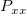

コヒーレンスは次のように定義されます。
ここで は、2つの信号 x および y のクロスパワースペクトルの密度で、 と は、それぞれxとyのパワースペクトルの密度です。
これは、2つの信号が似たような周波数成分を含むかどうかをテストすることで、それらの線形の依存度を測定する周波数の関数です。コヒーレンスの大きさは0から1の範囲です。与えられた周波数において、コヒーレンスが1に等しい場合、2つの信号はそれぞれ、その周波数で完全に一致していると考えられます。逆に、コヒーレンスが0の場合、信号はその周波数で全体的に関係が無いということができます。
計算のために、信号は、FFTを使って分析する周波数成分に対していくつかのセクションに分けられます。隣接するセクションは重ね合わせることができ、これは複数のセクションにまたがった共有の周波数を検出する助けとなります。FFTセクションのサイズ、ウィンドウ法やサイズ、重ね合わせのデータポイント数は結果に影響します。入力信号の性質に従って、これらを選択します。
コヒーレンスを使うには
|
このセクションのトピック: |